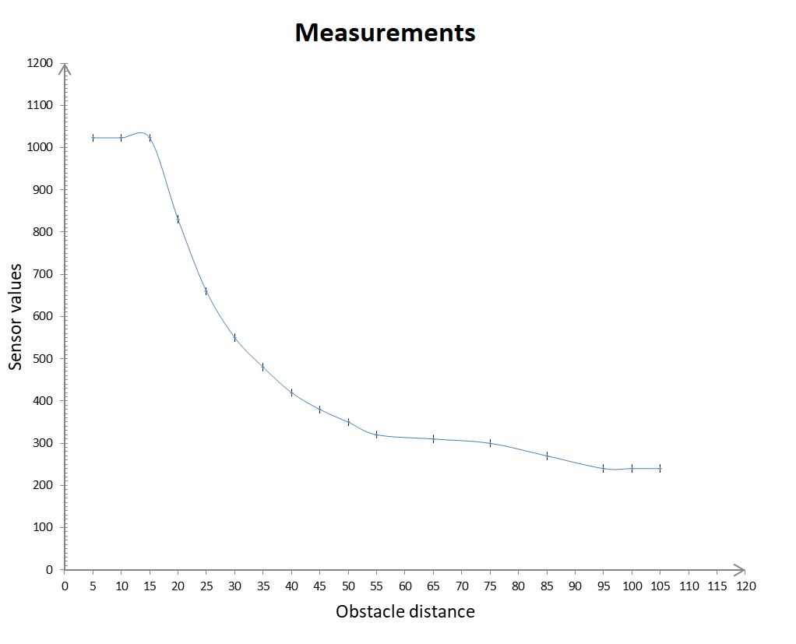

Topic 7: Electronic input devices
IR PHOTOTRANSISTOR
SENSOR 1: detecting the dis
For my final project I need a sensor that can detect obstacles so I decided to create a sensor that is able to detect the presence of an obstacle and one that detects the distance of the obstacle. To crate those sensors I have used the infrared phototransistor present in our kit and an infrared led.
To build the circuit I have followed the scheme present on our course webpage. However I have changed many resistors until I have found the values of resistance that best allow to read a clear signal.
this is my circuit:
Firstly I have written a simple arduino program to read the values of the phototransistor:
void setup() {
Serial.begin(9600);
pinMode(A0, INPUT); // set A0 as the input pin
}
void loop() {
int a=analogRead(A0); // read the values of the phototransistor
Serial.println(a); // print those values
delay(100);
}
This program seemd not to work but after many tries I have discovered why:
1) The phototransistor was detecting infrared light from the sun
SOLUTION: close the window blinds
2) the phototransistor was detecting infrared ligth from my computer
SOLUTION: Move the circuit as far as possible from the computer
3) The phototransistor detected infrared ligth beams directly from the LED instead of the reflected ones
SOLUTION: cover both the phototransistor and the led with a pice of a staw so that all the light from the led would have been directed up and the phototransistor would only detect the reflected light:
4) Not even this solution seemed to work because the straw was transparent to infrared light so I covered the pices of stow with insulant tape.
After this my sensor finally worked
So I started taking datas: I used a meter to see what was the detected value when an obstacle was placed at different distances
This are the datas I got:
SENSOR 2: detecting the presence of an obstacle
to detect only the presence of an obstacle I pointed the led straght to the phototransistor so that when there are no obstacle between the led and the phototransistor the phototransistor woul read very high values and when an obstacle blocks the infrared light beams the phototransistor would detect very low values (I have used the same simple arduino program as for sensor 1).


So I wrote this arduino program:
void setup() {
Serial.begin(9600);
pinMode(A0, INPUT);
}
void loop() {
int a=analogRead(A0);
if (a > 100 ){
Serial.println("No obstacle");
}
else {
Serial.println("Obstacle detected");
}
delay(100);
}